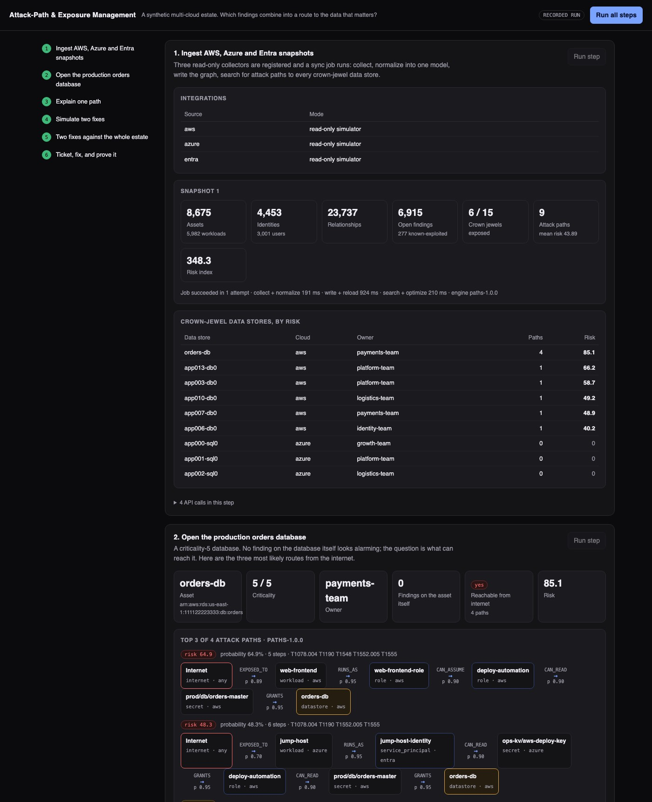
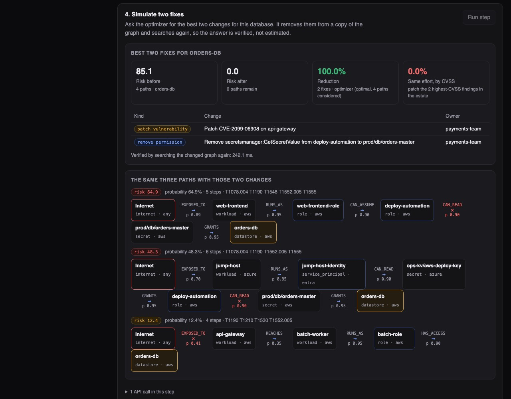

Python · Security graph analytics · 2026-10
Which Two Fixes Cut Off the Route to the Database?
A security platform that joins workloads, identities, secrets and data stores from three clouds into one graph, finds the routes from the internet to critical data, and picks the fixes that remove the most risk. On an invented estate, two fixes closed every route to the orders database; patching the two most severe findings closed none.

Built from a written blueprint as one vertical slice, on a synthetic estate: 8,675 invented assets, 4,453 identities and made-up vulnerability ids. The cloud collectors are simulators; no real account is read. The attack chains were planted, and the estate was generated so that most severe findings sit on machines that lead nowhere important, so the gap to severity-first patching is by construction. Risk scores rank routes; they are not breach probabilities. The tool only analyses configuration. Not built: real collectors, Neo4j, Terraform, single sign-on.
01 — The problem
A scanner hands a security team thousands of findings, each with a severity score. The score describes one weakness on one machine. It says nothing about whether that machine can lead anywhere. Real break-ins are chains: a public server with a flaw, the cloud identity it runs as, a permission that identity has, a stored password, the database. Can software find those chains across clouds, and say which few changes break the most of them?
Blueprint 2 of ten in an enterprise build book, built as the demo scenario end to end.
02 — What I built
A Python service on PostgreSQL with a background worker and a web page, started by one docker compose up.
- Collect and normalize: three simulated collectors emit AWS-, Azure- and Entra-shaped data; a normalizer turns them into one model of nodes and typed relationships.
- Attack-path engine: keeps only steps an attacker could take, then finds the most likely routes from the internet to each critical data store.
- Simulator and optimizer: removes fixes from a copy of the graph, searches again, and reports the change; an exact solver picks the best set for a budget.
- Questions in words: a small rule-based reader answers five question shapes using only graph edges, and refuses the rest.
- Platform: per-tenant row-level security, a retrying job queue, safe-to-repeat writes, a hash-chained audit log.
03 — How it was built
- 01
Three vendors, one graph
AWS calls it an instance profile, Azure a managed identity, Entra a service principal. The normalizer maps each vendor's objects to the same few node types and ten relationship types, keyed by the vendor's own id. That is what lets a chain cross clouds: an Azure Key Vault secret that holds an AWS access key is simply one edge. A second collection of an unchanged estate updates rows in place; a permission that disappears is closed with a date, not deleted.
rels.append(_rel(k["id"], "GRANTS", k["unlocks"])) # the vault secret unlocks an AWS role - 02
Only steps that can actually be taken
A public server is not a way in unless something on it can be exploited. Each possible step gets a probability: a fixed value for using a permission the attacker already holds, and for an exploit a value built from the severity score, how mature public exploits are, and whether the flaw is on the known-exploited list. A route's probability is the product of its steps. These values are assumptions written in the code, not fitted to incident data.
p_exploit = min(0.95, 0.05 + 0.6 * (cvss / 10) * maturity + 0.25 * kev) - 03
Search a small graph, not the whole estate
The search wants the several most likely routes to each target, which is slow on 15,000 nodes. But only nodes that the internet can reach and that can reach the target matter. Cutting the graph down to those first makes a whole-estate analysis take about 30 ms. Copies of the same server in one scaling group count as one finding.
h = g.subgraph(reachable & (nx.ancestors(g, target) | {target})) - 04
Pick fixes by what they disconnect, then check
Each route lists the changes that would break it: patch this flaw, remove that permission, require a second sign-in factor. Choosing the few changes that break the most route risk is a covering problem, solved exactly here. The answer is then verified by removing those edges and searching again, because cutting the best routes can expose ones that were ranked below the top few.
m.AddMaxEquality(y, [x[r] for r in p["remediations"]]) # a path is cut if any fix on it is chosen - 05
Close the loop: ticket, fix, new snapshot
A fix becomes a ticket for the team that owns the resource, with the routes it breaks as evidence. When fixes are marked done, the next collection produces a new snapshot and the platform lists which routes disappeared. In the demo, four routes to the orders database are gone and no new ones appeared.
"removed": sorted((brief(old[s]) for s in old.keys() - new.keys()), ...)
04 — Results
The estate. 8,675 assets, 4,453 identities, 23,737 relationships, 6,915 open findings. 6 of 15 critical data stores were reachable from the internet, over 9 routes. All 9 planted chains were found, node for node.
The orders database. No finding on the database itself, yet four routes lead to it. The top one: a public web server with a known-exploited flaw, the role it runs as, a role that one may assume, a secret that role can read, the database. The optimizer's two fixes (remove one secret-read permission, patch one flaw on the API gateway) took its risk from 85.1 to 0.

Which fixes first (risk left across all critical data stores, each verified by a fresh search):
| Fixes | By route | By severity | Public + known-exploited |
|---|---|---|---|
| 2 | 60% | 100% | 92% |
| 4 | 29% | 100% | 92% |
| 8 | 0% | 100% | 64% |
Only 9 of the 6,915 findings sit on a route to critical data, and one of the 100 most severe. The estate was generated that way on purpose, so read the table as an illustration of the idea, not as a measurement of real networks.
Speed. Stored results are served at 492 requests a second with 8 clients (95% under 21 ms). A simulation takes about a quarter of a second of computing and the service is one process, so 8 analysts simulating at once wait about 3 seconds each: the honest bottleneck, with a known fix (run them on the worker pool).
Checks. 21 tests: the scoring formula, fallback to the next flaw after a patch, the optimizer on a hand-made graph, re-collection without duplicates, a permission matrix, and one tenant trying to read or simulate against another's graph.
05 — What I'd do next
- Real read-only collectors with narrowly scoped cloud roles.
- Fit the step probabilities to red-team or incident data instead of stating them.
- Move simulations to the worker pool; consider a graph database once the graph no longer fits in memory.